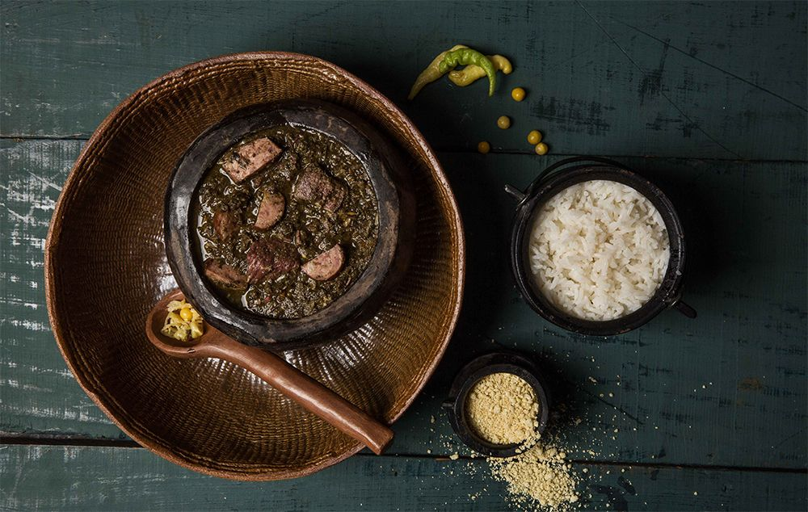

Casa do Saulo
Pratos típicos como filhote ao molho de tucupi em um ambiente histórico.
Conheça os melhores restaurantes e pratos paraenses.
Pratos típicos como filhote ao molho de tucupi em um ambiente histórico.

Ambiente moderno com fusão de sabores regionais e internacionais.

Tradição italiana com toque paraense, localizado no bairro Nazaré.

Caldo de tucupi com jambu e camarão, servido nas ruas da cidade.

Peixe amazônico muito apreciado, grelhado com acompanhamentos típicos.

Prato tradicional feito com folhas de mandioca cozidas por sete dias.